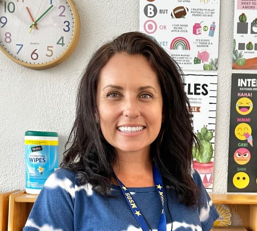

I am a graduate of Northern Arizona University and Liberty University. I have a M.Ed. with a concentration in School Counseling. I have taught students across multiple grade levels, including a semester in China teaching University. I love teaching second grade because I love helping students build curiosity, confidence, and a lifelong love of learning.
Every child is an individual with unique characteristics, temperament, and developmental pathways. While most children will go through the same basic stages of development, they will do so at their own pace and each with their own unique personalities and dispositions. Children differ in their motivation, prior knowledge and skills, learning styles, and interests. As teachers we know that each student is an individual capable of making progress and contributing to the larger group.
In second grade we will have shared goals and can expect to have common learning progressions. However, as a responsible educator creating my students’ learning opportunities, I will always consider the unique intercross between the child and the environment in order to fully support their growth and development. Children develop and grow over time when they experience supportive interactions and active engagement in enriching learning environments. It is my honor and duty as your child’s teacher to provide the utmost loving care and guidance as s/he continues their academic journey!
Discipline is a process of learning self-control, respect for others, and responsibility. It is the necessary process of learning to be respectful and resourceful members of a community. Positive methods of discipline will be practiced at all times so children are aware of an acceptable code of conduct at school. We thrive on mistakes and with proper direction and reflection we will grow because of them. This is the reason the majority of our minor disciplinary issues in this classroom are viewed as learning opportunities. It is through error and process in which we truly learn. For this reason, mistakes are not only tolerated and expected, but are in fact needed! At the core, it is mistakes that are the cause and effect for learning.
Always take pride in your work and actions.
Treat everyone with kindness and consideration.
Be ready to learn and be fully engaged during class.
Gotcha!
5 in a row — Note home
10 in a row — Treasure box
Everyone starts the day here — ready to learn.
Yellow ticket home with prompt for family discussion.
Could be… Think paper · Email home · Talk with counselor or principal.
Book/Program: Reader’s and Writer’s Journal, Freckle, Zaner-Bloser Handwriting Book, Sounds to Spelling, Quarterly Whole-Group Read Aloud, Monthly Book Reports.
Content: Writing, Grammar, Sounds to Spelling.
Book/Program: enVision Math 2.0 Volumes 1 & 2 and Freckle.
Content: Computation, place value, time, money, estimating and graphing, problem solving, geometry, measurement, fractions, temperature, and multiplication.
Program: Hands-on Science Labs, SAM’s Lab, Lego Lab, Mystery Science.
Content: Scientific Method · Engineering Design Process · Matter · Earth’s Surface and Changes to Earth’s Surface (Hawaii Landforms) · Environments for Living Things.
Book: Map, Globes, Graphs book · Hands-on activities.
Content: Self — all about me · Family Unit · Community and Community Helpers · Economics · American Culture / Government · Cultural Diversity · Earth and environmental awareness · Geography.
Grading will be based on a variety of daily classwork, projects, assessments, observations, and homework. Assessments will be sent home in a manilla folder and need to be signed and returned. Writing samples can be provided at any time but I keep them for conferences and end of the year to show growth.
Quizzes, homework, and classwork.
Projects, writing papers, and tests.
In-class discussions and group activities.
Homework is typically assigned Monday through Thursday. Students will write their homework assignments in their agenda every day.
📌 Recognize the patterns — don’t memorize the words. · No Math homework on test day.
We will be using these digital resources throughout the year: Freckle, Epic, Brain-Pop, Savvas — and others may be added during the year.
In second grade, students will be challenged through hands-on interactive cross-curricular units. Students will learn about a variety of Science and Social Studies units. These Science and Social Studies units will also integrate reading, writing, and math. For example, students will learn about Landforms (Quarter 3) in Social Studies. In this unit students will use their prior knowledge of Expository Writing (Quarter 2) to research a Hawaiian landform, build it with Design and Engineering (Quarter 1), and write about it! They will practice their reading using digital platforms such as Epic, BrainPop, and Chat GPT (monitored by teacher to tailor the reading to their level).
Now part of Renaissance, Freckle is an online learning platform that provides differentiated practice in Math and English Language Arts (ELA). It adapts to each student’s individual skill level, offering personalized practice to challenge them appropriately. You will be given login information — they may practice this freely at home if you would like.
STAR Testing — Fall, Winter, End of Year.
| Monday | Tuesday | Wednesday | Thursday | Friday | |
|---|---|---|---|---|---|
| 7:35–8:00 | Morning Work | Morning Work | Morning Work | Morning Work | Morning Work |
| 8:00–8:30 | Phonics | Phonics | Phonics | Phonics | Mass |
| 8:30–9:00 | Religion | Religion | Religion | Religion | Mass |
| 9:00–9:45 | Math | Math | Math | Math | Math |
| 9:45–9:55 | Snack | Snack | Snack | Snack | Snack |
| 10:00–10:50 | ART | ART | PE | MUSIC | PE |
| 10:50–11:15 | Team Meeting | 3 Station Rotation | 3 Station Rotation | 3 Station Rotation | Dictation Test |
| 11:15–12:15 | Lunch | Lunch | Lunch | Lunch | Lunch |
| 12:15–1:00 | Library | Reading | Reading | Reading | Reading |
| 1:00–1:45 | Writing | Writing | Music | Writing | Writing |
| 1:45–2:15 | Sci/SS | Sci/SS | Sci/SS | Sci/SS | Seasonal |
Our classroom is a safe, respectful space where every child feels valued and supported. At ages 7 and 8, students are still learning how to navigate social interactions, and it is our shared responsibility to model kindness and respect. Please help us maintain this positive environment by:
Thank you for partnering with me to create a nurturing and respectful community for all our students. Thank you for entrusting me with your child’s academic and social development. It is a genuine privilege to be part of this meaningful chapter in their life. Please don’t hesitate to reach out with any questions, concerns, or feedback — you can always count on my open and respectful communication. I’m excited for a wonderful year ahead!